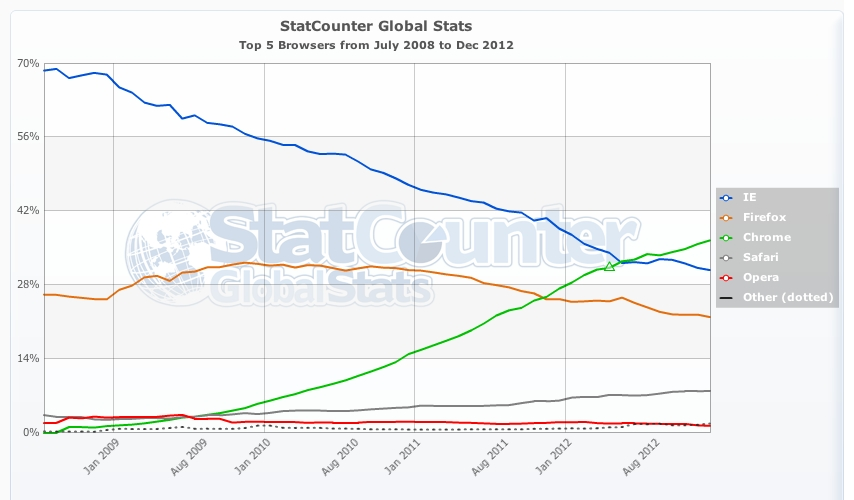

Introduction to Web Concepts
presented by
Chris Guzman
with help from
Brigitte Warner
About Me
I'm here to help! Let me know if you have any questions.
- Developer at OrderUp
- Previously worked at a non-profit
- Took Betamore Academy Class
- Taught myself before taking class
Welcome!
Tell us about yourself.
- Who are you?
- Why did you take the class?
- What do you hope to get out of the class?
- What would be your super power?
What we'll cover today
- Terms and Technologies
- Tools
- Build skeleton of site
- Push live with git and github!
What we'll cover tomorrow
- CSS
- JavaScript
What to expect
- This is a survey of a very broad topic
- Get a sense of what you'd like to know more about
- I don't know everything, and neither will you (Google is our friend)
- Have fun! (and ask questions)
Terms & Technologies
Terms
HTML: Hyper Text Markup Language - The code structure used to convey the content of a web site
CSS: Cascading Style Sheets - A language used to describe the presentation of the content
Terminal: The terminal is an interface in which you can type and execute text based commands. We can run applications on it, but now GUI applications do that for us.
Text Editor: A text editor is program that allows you to open, view, and edit plain text files. Unlike word processors, text editors do not add formatting to text, instead focusing on editing functions for plain text.
Terminal


Text Editors
Recommend:
IP Address: Internet Protocol Address - A unique address for a computer or a server. Some IP Addresses are only unique to the network they are on while others are completely unique
DNS: Domain Name Service - A directory that associates domain names with host IPs to allow users to connect to web sites via URLs
What is the world wide web?

Home and daily life of a web site
A typical web site will live or is "hosted" on a web server. Web servers are often large computers connected to a network.
- Type a web site address into the address bar
- DNS connects you to the hosting server
- The files are then sent back to your computer for display
- Sometimes code must be compiled before being sent back to you.
Clients vs. Servers
Clients make requests, servers fulfill them (usually).
For our web discussions, client = browser, but search engine crawlers, command line interfaces, and other applications can also behave as clients.
While any type of computer can be used as a server, they are generally larger and more powerful than others.
Browsers
Parsing languages & tools
Client-side:
- HTML
- CSS
- JavaScript
- Flash (with plugin)
- Images
Sever-side:
- PHP
- Perl
- Python
- Ruby
- .Net
- Java
- ColdFusion
- Databases
Not languages
- Git:
- Version Control
- Create anything with other people
- See the changes that have been made and go "back in time" to fix something that went wrong
- We'll talk about this more towards the end of class
- Github.com
- A website where can store a copy of our site
- We'll also be able to see the changes there
- And be able deploy our site live!
Break time!
Building a web site
Considerations before building
- What is the purpose of the site?
- Hosting and a domain name
- Domain name registration should not cost more than $15/yr
- Hosting should not cost more than $50/yr
- Hosting choices may depend on supported server-side tech
- Whether to build it yourself or hire someone
But wait there's more!

We're going to build one today that will be free to host!
WYSIWYG vs. hand-coding
- WYSIWYG code editors make general assumptions about what you intended to write which often is not accurate or best
- They make the job of professionals much more difficult when the code is written poorly and filled with junk
- To truly understand what you are building, you need to learn the fundamental components
- Once you know how to code by hand, there are no limits to what you can build!
What languages and tools to use
- HTML and CSS will almost certainly be used
- JavaScript may be used for interactivity
- Git for version control and avoid that "Oops I deleted it"
- Github.com to host the site and store the backed up version in the cloud
- Server-side languages will likely be used for any data storage or retrieval - we'll talk about this later and I can point you to some resources.
Tools of the trade
To build your web site, you will probably need:
- A simple text editor or code editor such as SublimeText, Notepad, or TextWrangler to write your code. Many can be found for free.
- A web browser such as Chrome, Firefox, or Safari to test your code. All popular modern browsers are free.
Web development professionals
Meet the web team
- Front end
- User Experience Designer
- Graphic Designer
- Web Developer
- Back end
- Server Admin
- Database Admin
- Software Engineer
- Overall
- QA Engineer
- Project Manager
How to hire a developer
Remember the three Rs:
- References: Talk to people who have worked with the developer before. Were they prompt? Pleasant? Forthright?
- Requirements: Can they do the work that needs to be done. Ask for samples of their prior work and ask exactly which parts of the process they were responsible for. Design? UX? DB architecture? QA?
- Reality: If it sounds too good to be true, it probably is. This website will be a reflection of you, either personally or professionally. Hire someone you feel will be invested in a job well done.
How to be hired as a developer
- Be curious, a problem solver, and intrepid
- Build things. For yourself, if no one will pay you
- Take a class or two if you'd like
- Through all of this, learn your craft and how things work